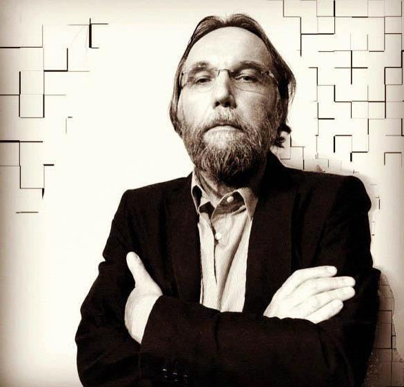
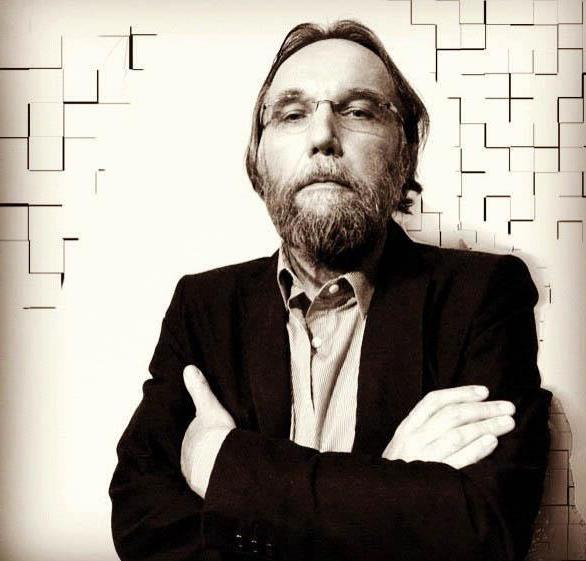
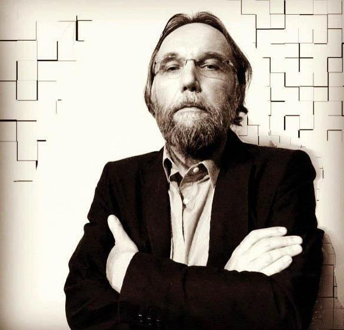
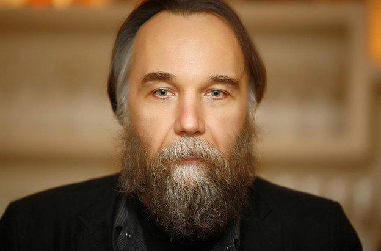

 

Дугин Александр родился в Москве в 1962 году. Его отец, Гелий Александрович, был кандидатом юридических наук, высокопоставленным офицером в генеральном штабе, преподавал в Таможенной академии. Мать, Галина Викторовна, работала врачом. После школы Дугин Александр поступает в Московский авиационный институт, однако окончить его не удалось. Будущий философ был отчислен со второго курса. Позже он заочно получил высшее образование в Новочеркасском инженерно-мелиоративном институте. Вращался в литературных и диссидентских кругах. Входил в Южинский кружок - неформальный клуб, не чуравшийся оккультных практик. Его члены собирались на квартире у писателя Юрия Мамлеева. После его эмиграции в 1974 году встречи продолжились на той же квартире вплоть до начала 90 х годов. Сегодня считается, что именно этот неформальный клуб оказал существенное влияние на взгляды и мировоззрение многих отечественных гуманитариев.В 1980 году вместе с российским исламским общественным деятелем Гейдаром Джемалем Дугин Александр Гельевич входит в кружок "Черный орден SS". Его возглавляет русский поэт и оккультист Евгений Головин, умерший в 2010 году. После распада Советского Союза работал с частью рассекреченных архивов КГБ. На этих материалах подготовил целую серию газетных и журнальных публикаций, цикл телепередач "Тайны века", который выходил на Первом канале. Занимается журналистикой, работает колумнистом в газете "Новый взгляд". В 1993 году становится одним из идеологов и лидеров национал-большевистской партии, которой сегодня руководит писатель Эдуард Лимонов. По словам самого Дугина, он вышел из ее рядов в 1998 году, когда у него возник конфликт с Лимоновым, из-за того, что у того не было четких политических взглядов. Философ Александр Дугин читает лекции в международном независимом эколого-политологическом университете. Студентам рассказывает о философии политики. В 2003 году возглавляет международное евразийское движение. В 2016 году становится главным редактором нового телеканала "Царьград ТВ".
